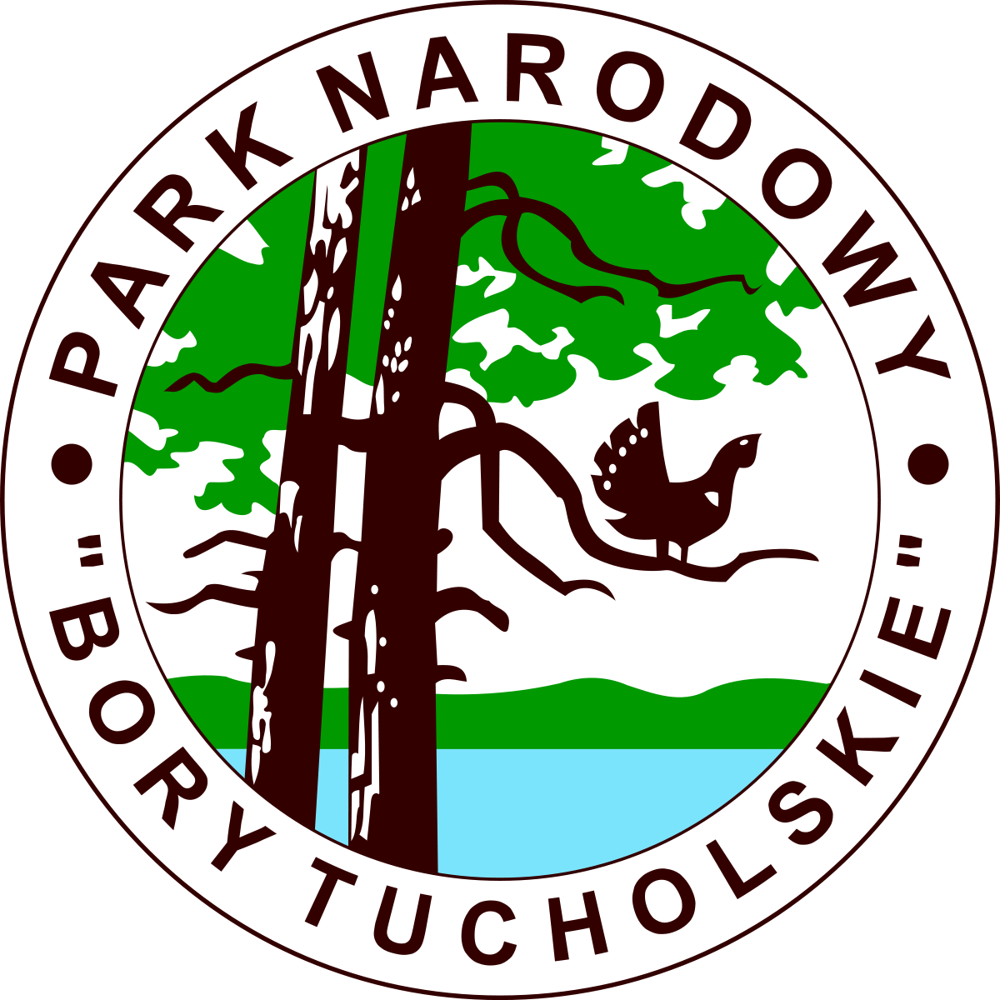

Park Narodowy "Bory Tucholskie"
Ochrona przyrody w ramach Parku Narodowego „Bory Tucholskie” rozpoczęła się oficjalnie w roku 1996. Powierzchnia terenów chronionych wynosi 46,13 km², więc relatywnie niedużo. Znajduje się on w południowej części województwa pomorskiego, niedaleko Chojnic. Symbolem parku jest głuszec stojący na gałęzi sosny, czyli gatunek dużego ptaka z rodziny kurowatych. Ptak ten już niestety nie występuje na tym obszarze. W Polsce głuszec jest skrajnie nielicznie występującym ptakiem lęgowym. W związku z tym jest zagrożony wyginięciem. Powierzchnia leśna parku obejmuje jedynie 1,9% całkowitej powierzchni leśnej. Na jego terenie znajduje się 21 jezior. Największym z nich jest Jezioro Ostrowite o powierzchni 272 ha. Siedem je i tworzy tzw. Strugę Siedmiu Jezior. Jest to w zasadzie niewielka rzeka o długości prawie 14 km. Bory Tucholskie to jeden z największych kompleksów borów sosnowych w Polsce. Ochroną ścisłą objęto 7% jego powierzchni.